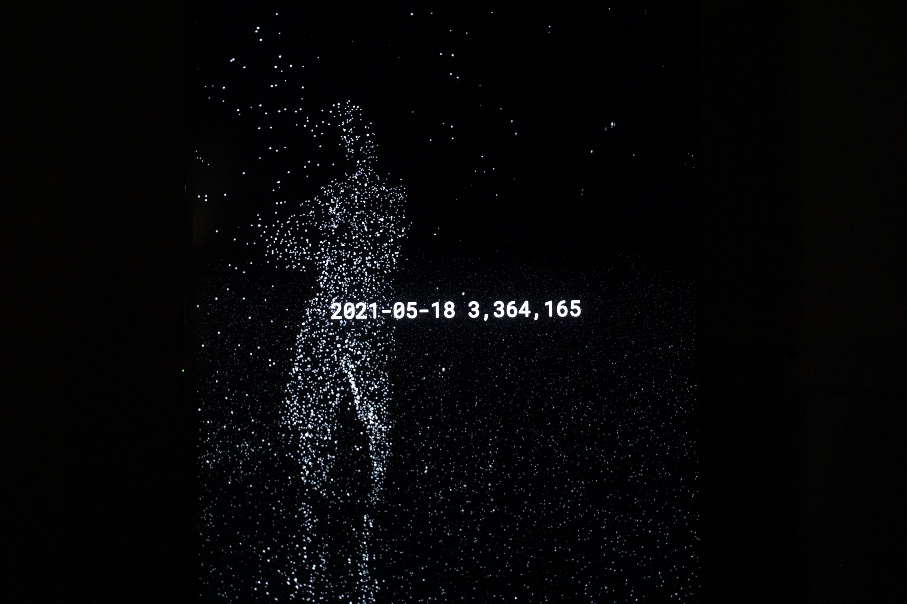
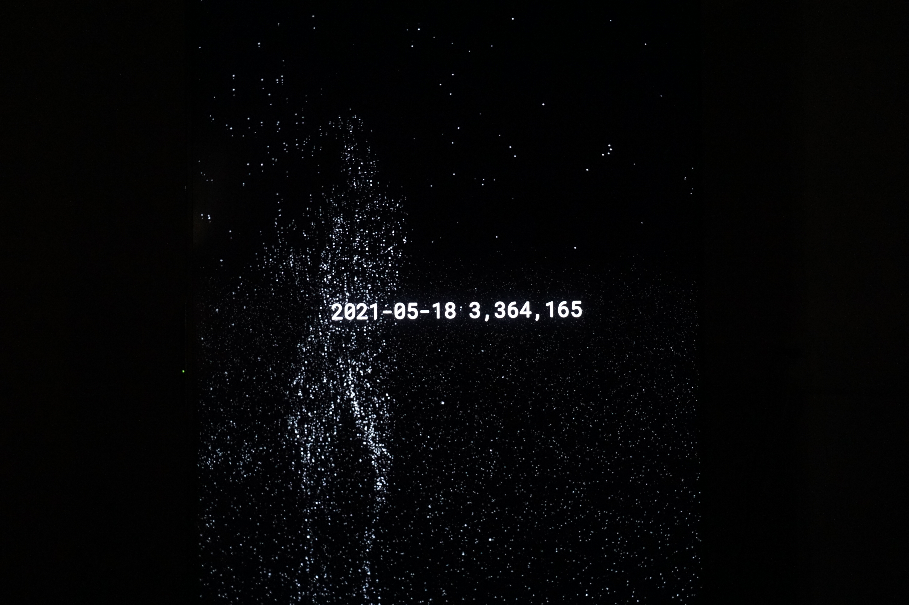

As of today, it’s been more than 17 months since coronavirus was officially recognized in China.
In the past year, prejudices, hatred and chaos have dominated a lot of people’s mentality.
Even more people were hurt when a sense of tension and discrimination is growing in our society.
Mirroring Loss is created in this background, with a purpose to encourage people pause their anxiety
and remind them the year of 2022 essentially signifies the sudden loss of millions of lives.
The main interface is a smart mirror --constructed by a large screen monitor and Kinect motion sensor
-- it will detect the user’s body and show a reflection of it in generative particle arts. The number
of particles are in ratio to a large population. The user can come in front of the mirror and see themselves
in a virtual space. With sound as an indication, a meditative experience will start: coincided with the
death number throughout the year, particles that construct the human body will gradually fall down, accumulated
on the groud,
representing the vanishing of life. In this process, the user will witness the transformation of his or
her body towards incompleteness, fragmentation and decay. It is a symbolic reminder that the loss of human
lives is the loss of our own community.





Project Mirroring Loss aims to challenge the problematic prejudices and their dominance on mentality
during the ongoing global crisis by designing a meaningful self-reflection experience.
The memories for 2020 are full of chaos: contagious disease, shutdown of schools and shops,
people losing jobs, etc. We are sometimes buried in such chaos, the distress and anger, while
forgetting that the year 2020 signifies the sudden loss of lives, those who could have more time.
Mirroring Loss is designed to help its users pause their anxious thoughts and contextualize loss,
to reclaim empathy for one another. Like a pillar supporting society, empathy is the foundation
of bonding, networking, and community-forming. A reminder of being empathic is significant for
everyone to recreate the social closeness and to defeat this pandemic as a whole.
references
world wide death toll data is from WHO
codes can be found on my Github
an un-editted demo video of the process is here
if you're also interested in my conceptual paper for this project google doc
huge thanks for my advisor MOQN, along with soil supplier Zane Fadul, gardener Daniel Zamiri and iPad supplier Sangjin Lee.